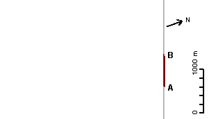

| Field: north boundary | Event: g | Date: 14-Jul-2005 |
AgGPS FieldManager V6.01.01 Application Report | ||
|---|---|---|
|  | ||
| Start Date: | 14-Jul-2005 | |
| Start Time: | 07:18:10 | |
| Field latitude: | 27° 20' 32" S | |
| Field longitude: | 151° 22' 22" E | |
| Field Area: | 0.0000 | |
| Productive Area: | 0.0000 | |
| Area Units: | ha | |
| Distance Units: | m | |
| Swath Width: | 12.0000 | |
| Application Width: | 12.0000 | |
| Total Time: | 000:05:04.10 | |
| Application Area: | 0.8423 | |